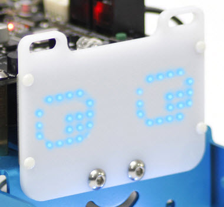
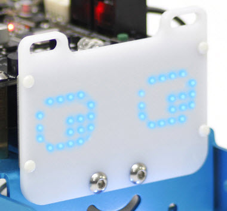

Componentes exteriores
Componentes exteriores importantes a la hora de programar y que trataremos en este curso son:
- Sensor de Línea para utilizarlo por ejemplo como sigue líneas. EN ESTE CURSO LO CONSIDERAREMOS CONECTADO EN EL PUERTO 2.
- Sensor de distancia por ultrasonidos para utilizarlo por ejemplo como evita-obstáculos. EN ESTE CURSO LO CONSIDERAREMOS CONECTADO EN EL PUERTO 3.
- Matriz de leds 8x16 para expresar símbolos y caracteres. Este componente no está en el kit standard mBot, pero sí en el que presta CATEDU. EN ESTE CURSO LO CONSIDERAREMOS CONECTADO EN EL PUERTO 1.
 
Fuente de las imágenes: http://makeblock.es/

Fuente de las imágenes: http://makeblock.es/